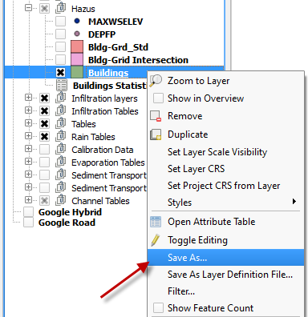

Hazus Tool
Contents
Hazus Tool#
The Hazus tool is used to generate water surface elevation or flow depth rasters for the FEMA Hazus program.
Building Layer#
Add building layer from a shapefile.
Click Open Data Source Manager button.
Navigate to the building shapefile and add it to the map.
Import Depth and Water Surface Layers#
Add a depth layer and a water surface layer.
Click Open Data Source Manager button.
Fill the form as shown in the following image:

Repeat this process for the DEPFP.OUT file.
Assign Water Elevation and Depth to the Grid Layer#
On the Grid Tools widget select the Assign water elevations/flow depths to grid from points layer button.

Edit the dialog box as shown below and click the Assign to selected grid field button.
Click OK to close the dialog box.

Repeat the process for the Depth layer.
On the Grid Tools widget select the Assign water elevations/flow depths to grid from points layer button.
Edit the dialog box as shown below and click the Assign to selected grid field button.
Click OK to close the dialog box.
Intersect Building Layer to Grid#
Use the QGIS Vector Menu to set up the intersection. Click Vector>GeoProcessing Tools>Intersection.

Set up the intersection dialog box as shown below. Click Run to make the intersection. This process adds the Intersection layer to the map automatically.
Review Intersection Layer#
The new Intersection layer has fields from both the Buildings and Grid layers:
Each building polygon that intersects the grid has several partitions (polygons) with different elevations. The following building has 7 partitions with different data from each grid:

Each partition of the building has, different field values. For example, HOUSE_ID “1” in the Features Table, has different ‘elevation’, ‘water_elev’, and ‘flow_depth’:

Homogenize the Intersection Layer#
Select the HAZUS button in the FLO-2D Toolbar.

Fill the dialog box as shown below and click the Compute and Show Building Statistics button.

Note: The ‘Finished floor global adjustment factor’ value will be added to the ground elevations, if selected.
Click OK to close the message dialog box.

The Hazus tool calculates the statistics of the buildings polygons. It computes the following data for each building.
Ground elevation (min, max, mean);
First floor elevation (min, max, mean);
Water surface elevation (min, max, mean);
Depth (min, max, mean).

Join Building Statistics Table to Building Polygons#
Right click the Buildings layer and click Properties. Add a Join to the layer. Click OK and Close the Properties window.


Save the Buildings Layer to a shapefile. Select the Save As… to a location and name the file.
Note: The style of this new layer can be edited to help the user review the data. The attributes can be sorted and arranged to help track outliers or bad data. Use the field calculator to perform additional statistical analysis on the data in this layer.

Now, the Buildings Shapefile has “join” fields from the Buildings Statistics table:

Rasterize the Buildings#
On the Main QGIS Menu, click Processing>Toolbox.

Enter the search term Rasterize in the Processing Toolbox search field. Double click the Saga Rasterize tool. Saga>Raster Creation Tools>Rasterize.

Change the dialog box as shown below and click Run.

This example uses 10 ft. pixel resolution. The user can change this value to the desired resolution to better fit the buildings. This raster can be used with the FEMA Hazus software. Any other rasters that Hazus requires can be generated with the same methodology.